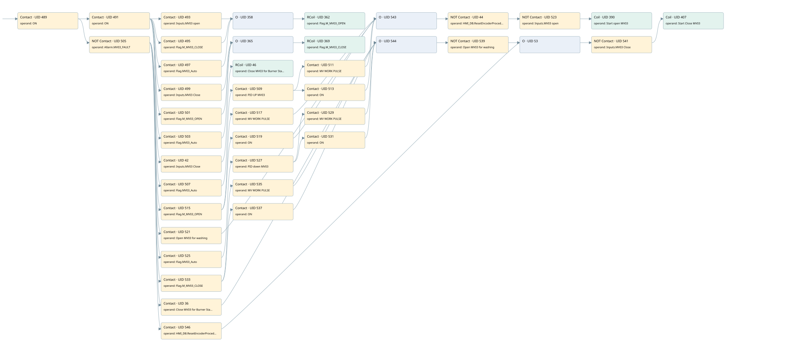

mv03 controlled by psh03
valve control loop · 검색 색인 순서 5 · 원본 내부 NID 추정 4
백업 PLF 원본의 2917460 바이트 위치에서 복원한 XML. 검색 문서 1706의 객체 키 161022007612000000000000와 연결했다. 이름 해석 36/36개. 남은 RefId는 상수 또는 미해석 참조다.
연결 구조 다시 그리기
원본 Part/PCon/Wire를 이용한 연결도다. TIA 화면의 래더 배치 또는 실행 결과를 재현한 그림은 아니다. 핀 연결은 아래 표와 원본 XML을 기준으로 읽는다. 노드 위에 마우스를 두면 피연산자 이름을 볼 수 있다.

접점·코일·블록과 피연산자
| Part UID | Gate | Negated 핀 | 연결 피연산자 |
|---|---|---|---|
| 489 | Contact | operand = ON | |
| 491 | Contact | operand = ON | |
| 493 | Contact | operand = Inputs.MV03 open | |
| 495 | Contact | operand = Flag.M_MV03_CLOSE | |
| 497 | Contact | operand = Flag.MV03_Auto | |
| 358 | O | ||
| 362 | RCoil | operand = Flag.M_MV03_OPEN | |
| 499 | Contact | operand = Inputs.MV03 Close | |
| 501 | Contact | operand = Flag.M_MV03_OPEN | |
| 503 | Contact | operand = Flag.MV03_Auto | |
| 365 | O | ||
| 369 | RCoil | operand = Flag.M_MV03_CLOSE | |
| 42 | Contact | operand = Inputs.MV03 Close | |
| 46 | RCoil | operand = Close MV03 for Burner Startup | |
| 505 | Contact | operand | operand = Allarm.MV03_FAULT |
| 507 | Contact | operand = Flag.MV03_Auto | |
| 509 | Contact | operand = PID UP MV03 | |
| 511 | Contact | operand = MV WORK PULSE | |
| 513 | Contact | operand = ON | |
| 515 | Contact | operand = Flag.M_MV03_OPEN | |
| 517 | Contact | operand = MV WORK PULSE | |
| 519 | Contact | operand = ON | |
| 521 | Contact | operand = Open MV03 for washing | |
| 543 | O | ||
| 44 | Contact | operand | operand = HMI_DB.ResetEncoderProcedure_MV03 |
| 523 | Contact | operand | operand = Inputs.MV03 open |
| 390 | Coil | operand = Start open MV03 | |
| 525 | Contact | operand = Flag.MV03_Auto | |
| 527 | Contact | operand = PID down MV03 | |
| 529 | Contact | operand = MV WORK PULSE | |
| 531 | Contact | operand = ON | |
| 533 | Contact | operand = Flag.M_MV03_CLOSE | |
| 535 | Contact | operand = MV WORK PULSE | |
| 537 | Contact | operand = ON | |
| 36 | Contact | operand = Close MV03 for Burner Startup | |
| 544 | O | ||
| 539 | Contact | operand | operand = Open MV03 for washing |
| 546 | Contact | operand = HMI_DB.ResetEncoderProcedure_MV03 | |
| 53 | O | ||
| 541 | Contact | operand | operand = Inputs.MV03 Close |
| 407 | Coil | operand = Start Close MV03 |
접점 경로를 펼친 조건식
Contact·O/A·비교기의 원본 연결을 읽기 쉽게 펼친 보조 해석이다. POWER는 전원 레일 시작을 뜻한다. 호출 블록·에지·타이머의 내부 동작과 다중 쓰기 순서는 이 표로 실행 검증하지 않았다. 미해석 핀과 RefId는 원문 연결표에서 확인한다.
| UID | 동작 | 대상 | 원본 접점 경로 | 내용 |
|---|---|---|---|---|
| 362 | RCoil | Flag.M_MV03_OPEN | ((ON AND Inputs.MV03 open) OR (ON AND Flag.M_MV03_CLOSE) OR (ON AND Flag.MV03_Auto)) | 조건 성립 시 Reset |
| 369 | RCoil | Flag.M_MV03_CLOSE | ((ON AND Inputs.MV03 Close) OR (ON AND Flag.M_MV03_OPEN) OR (ON AND Flag.MV03_Auto)) | 조건 성립 시 Reset |
| 46 | RCoil | Close MV03 for Burner Startup | (ON AND Inputs.MV03 Close) | 조건 성립 시 Reset |
| 390 | Coil | Start open MV03 | (((((((ON AND NOT [Allarm.MV03_FAULT]) AND Flag.MV03_Auto) AND PID UP MV03) AND MV WORK PULSE) OR ((((ON AND NOT [Allarm.MV03_FAULT]) AND Flag.MV03_Auto) AND PID UP MV03) AND ON) OR (((ON AND NOT [Allarm.MV03_FAULT]) AND Flag.M_MV03_OPEN) AND MV WORK PULSE) OR (((ON AND NOT [Allarm.MV03_FAULT]) AND Flag.M_MV03_OPEN) AND ON) OR ((ON AND NOT [Allarm.MV03_FAULT]) AND Open MV03 for washing)) AND NOT [HMI_DB.ResetEncoderProcedure_MV03]) AND NOT [Inputs.MV03 open]) | 조건에 따른 Coil 기록 |
| 407 | Coil | Start Close MV03 | ((((((((ON AND NOT [Allarm.MV03_FAULT]) AND Flag.MV03_Auto) AND PID down MV03) AND MV WORK PULSE) OR ((((ON AND NOT [Allarm.MV03_FAULT]) AND Flag.MV03_Auto) AND PID down MV03) AND ON) OR (((ON AND NOT [Allarm.MV03_FAULT]) AND Flag.M_MV03_CLOSE) AND MV WORK PULSE) OR (((ON AND NOT [Allarm.MV03_FAULT]) AND Flag.M_MV03_CLOSE) AND ON) OR ((ON AND NOT [Allarm.MV03_FAULT]) AND Close MV03 for Burner Startup)) AND NOT [Open MV03 for washing]) OR ((ON AND NOT [Allarm.MV03_FAULT]) AND HMI_DB.ResetEncoderProcedure_MV03)) AND NOT [Inputs.MV03 Close]) | 조건에 따른 Coil 기록 |
원본 배선 연결
| Wire UID | 동일 Wire 연결 끝점 |
|---|---|
| 545 | Powerrail {} ↔ Part 489.in |
| 439 | ORef 408 (ON) ↔ Part 489.operand |
| 490 | Part 489.out ↔ Part 491.in ↔ Part 505.in |
| 440 | ORef 409 (ON) ↔ Part 491.operand |
| 492 | Part 491.out ↔ Part 493.in ↔ Part 495.in ↔ Part 497.in ↔ Part 499.in ↔ Part 501.in ↔ Part 503.in ↔ Part 42.in |
| 22 | ORef 23 (Inputs.MV03 open) ↔ Part 493.operand |
| 21 | Part 493.out ↔ Part 358.in1 |
| 442 | ORef 411 (Flag.M_MV03_CLOSE) ↔ Part 495.operand |
| 496 | Part 495.out ↔ Part 358.in2 |
| 443 | ORef 412 (Flag.MV03_Auto) ↔ Part 497.operand |
| 498 | Part 497.out ↔ Part 358.in3 |
| 444 | Part 358.out ↔ Part 362.in |
| 446 | ORef 413 (Flag.M_MV03_OPEN) ↔ Part 362.operand |
| 25 | ORef 26 (Inputs.MV03 Close) ↔ Part 499.operand |
| 24 | Part 499.out ↔ Part 365.in1 |
| 448 | ORef 415 (Flag.M_MV03_OPEN) ↔ Part 501.operand |
| 502 | Part 501.out ↔ Part 365.in2 |
| 449 | ORef 416 (Flag.MV03_Auto) ↔ Part 503.operand |
| 504 | Part 503.out ↔ Part 365.in3 |
| 40 | Part 365.out ↔ Part 369.in |
| 452 | ORef 417 (Flag.M_MV03_CLOSE) ↔ Part 369.operand |
| 41 | ORef 43 (Inputs.MV03 Close) ↔ Part 42.operand |
| 48 | Part 42.out ↔ Part 46.in |
| 49 | ORef 50 (Close MV03 for Burner Startup) ↔ Part 46.operand |
| 454 | ORef 418 (Allarm.MV03_FAULT) ↔ Part 505.operand |
| 506 | Part 505.out ↔ Part 507.in ↔ Part 515.in ↔ Part 521.in ↔ Part 525.in ↔ Part 533.in ↔ Part 36.in ↔ Part 546.in |
| 455 | ORef 419 (Flag.MV03_Auto) ↔ Part 507.operand |
| 508 | Part 507.out ↔ Part 509.in |
| 456 | ORef 420 (PID UP MV03) ↔ Part 509.operand |
| 510 | Part 509.out ↔ Part 511.in ↔ Part 513.in |
| 457 | ORef 421 (MV WORK PULSE) ↔ Part 511.operand |
| 512 | Part 511.out ↔ Part 543.in1 |
| 458 | ORef 422 (ON) ↔ Part 513.operand |
| 514 | Part 513.out ↔ Part 543.in2 |
| 461 | ORef 423 (Flag.M_MV03_OPEN) ↔ Part 515.operand |
| 516 | Part 515.out ↔ Part 517.in ↔ Part 519.in |
| 462 | ORef 424 (MV WORK PULSE) ↔ Part 517.operand |
| 518 | Part 517.out ↔ Part 543.in3 |
| 463 | ORef 425 (ON) ↔ Part 519.operand |
| 520 | Part 519.out ↔ Part 543.in4 |
| 466 | ORef 426 (Open MV03 for washing) ↔ Part 521.operand |
| 522 | Part 521.out ↔ Part 543.in5 |
| 27 | Part 543.out ↔ Part 44.in |
| 39 | ORef 45 (HMI_DB.ResetEncoderProcedure_MV03) ↔ Part 44.operand |
| 47 | Part 44.out ↔ Part 523.in |
| 29 | ORef 30 (Inputs.MV03 open) ↔ Part 523.operand |
| 28 | Part 523.out ↔ Part 390.in |
| 470 | ORef 428 (Start open MV03) ↔ Part 390.operand |
| 471 | ORef 429 (Flag.MV03_Auto) ↔ Part 525.operand |
| 526 | Part 525.out ↔ Part 527.in |
| 472 | ORef 430 (PID down MV03) ↔ Part 527.operand |
| 528 | Part 527.out ↔ Part 529.in ↔ Part 531.in |
| 473 | ORef 431 (MV WORK PULSE) ↔ Part 529.operand |
| 530 | Part 529.out ↔ Part 544.in1 |
| 474 | ORef 432 (ON) ↔ Part 531.operand |
| 532 | Part 531.out ↔ Part 544.in2 |
| 477 | ORef 433 (Flag.M_MV03_CLOSE) ↔ Part 533.operand |
| 534 | Part 533.out ↔ Part 535.in ↔ Part 537.in |
| 478 | ORef 434 (MV WORK PULSE) ↔ Part 535.operand |
| 536 | Part 535.out ↔ Part 544.in3 |
| 479 | ORef 435 (ON) ↔ Part 537.operand |
| 538 | Part 537.out ↔ Part 544.in4 |
| 35 | ORef 37 (Close MV03 for Burner Startup) ↔ Part 36.operand |
| 38 | Part 36.out ↔ Part 544.in5 |
| 482 | Part 544.out ↔ Part 539.in |
| 483 | ORef 436 (Open MV03 for washing) ↔ Part 539.operand |
| 31 | Part 539.out ↔ Part 53.in1 |
| 51 | ORef 52 (HMI_DB.ResetEncoderProcedure_MV03) ↔ Part 546.operand |
| 54 | Part 546.out ↔ Part 53.in2 |
| 55 | Part 53.out ↔ Part 541.in |
| 33 | ORef 34 (Inputs.MV03 Close) ↔ Part 541.operand |
| 32 | Part 541.out ↔ Part 407.in |
| 486 | ORef 438 (Start Close MV03) ↔ Part 407.operand |
식별자 해석 근거 36개
| ORef UID | RefId | 이름 | IdentXmlPart 파일 | 해석 방법 |
|---|---|---|---|---|
| 408 | 1 | ON | 0617-IdentXmlPart.xml | UID/RID + search-text + NID agreement |
| 409 | 1 | ON | 0617-IdentXmlPart.xml | UID/RID + search-text + NID agreement |
| 23 | 175 | Inputs.MV03 open | 0619-IdentXmlPart.xml | UID/RID + search-text + NID agreement |
| 411 | 41 | Flag.M_MV03_CLOSE | 0619-IdentXmlPart.xml | UID/RID + search-text + NID agreement |
| 412 | 42 | Flag.MV03_Auto | 0619-IdentXmlPart.xml | UID/RID + search-text + NID agreement |
| 413 | 43 | Flag.M_MV03_OPEN | 0619-IdentXmlPart.xml | UID/RID + search-text + NID agreement |
| 26 | 176 | Inputs.MV03 Close | 0619-IdentXmlPart.xml | UID/RID + search-text + NID agreement |
| 415 | 43 | Flag.M_MV03_OPEN | 0619-IdentXmlPart.xml | UID/RID + search-text + NID agreement |
| 416 | 42 | Flag.MV03_Auto | 0619-IdentXmlPart.xml | UID/RID + search-text + NID agreement |
| 417 | 41 | Flag.M_MV03_CLOSE | 0619-IdentXmlPart.xml | UID/RID + search-text + NID agreement |
| 43 | 176 | Inputs.MV03 Close | 0619-IdentXmlPart.xml | UID/RID + search-text + NID agreement |
| 50 | 187 | Close MV03 for Burner Startup | 0617-IdentXmlPart.xml | UID/RID + search-text + NID agreement |
| 418 | 45 | Allarm.MV03_FAULT | 0619-IdentXmlPart.xml | UID/RID + search-text + NID agreement |
| 419 | 42 | Flag.MV03_Auto | 0619-IdentXmlPart.xml | UID/RID + search-text + NID agreement |
| 420 | 39 | PID UP MV03 | 0617-IdentXmlPart.xml | UID/RID + search-text + NID agreement |
| 421 | 13 | MV WORK PULSE | 0617-IdentXmlPart.xml | UID/RID + search-text + NID agreement |
| 422 | 1 | ON | 0617-IdentXmlPart.xml | UID/RID + search-text + NID agreement |
| 423 | 43 | Flag.M_MV03_OPEN | 0619-IdentXmlPart.xml | UID/RID + search-text + NID agreement |
| 424 | 13 | MV WORK PULSE | 0617-IdentXmlPart.xml | UID/RID + search-text + NID agreement |
| 425 | 1 | ON | 0617-IdentXmlPart.xml | UID/RID + search-text + NID agreement |
| 426 | 46 | Open MV03 for washing | 0617-IdentXmlPart.xml | UID/RID + search-text + NID agreement |
| 45 | 191 | HMI_DB.ResetEncoderProcedure_MV03 | 0619-IdentXmlPart.xml | UID/RID + search-text + NID agreement |
| 30 | 175 | Inputs.MV03 open | 0619-IdentXmlPart.xml | UID/RID + search-text + NID agreement |
| 428 | 47 | Start open MV03 | 0617-IdentXmlPart.xml | UID/RID + search-text + NID agreement |
| 429 | 42 | Flag.MV03_Auto | 0619-IdentXmlPart.xml | UID/RID + search-text + NID agreement |
| 430 | 37 | PID down MV03 | 0617-IdentXmlPart.xml | UID/RID + search-text + NID agreement |
| 431 | 13 | MV WORK PULSE | 0617-IdentXmlPart.xml | UID/RID + search-text + NID agreement |
| 432 | 1 | ON | 0617-IdentXmlPart.xml | UID/RID + search-text + NID agreement |
| 433 | 41 | Flag.M_MV03_CLOSE | 0619-IdentXmlPart.xml | UID/RID + search-text + NID agreement |
| 434 | 13 | MV WORK PULSE | 0617-IdentXmlPart.xml | UID/RID + search-text + NID agreement |
| 435 | 1 | ON | 0617-IdentXmlPart.xml | UID/RID + search-text + NID agreement |
| 37 | 187 | Close MV03 for Burner Startup | 0617-IdentXmlPart.xml | UID/RID + search-text + NID agreement |
| 436 | 46 | Open MV03 for washing | 0617-IdentXmlPart.xml | UID/RID + search-text + NID agreement |
| 52 | 191 | HMI_DB.ResetEncoderProcedure_MV03 | 0619-IdentXmlPart.xml | UID/RID + search-text + NID agreement |
| 34 | 176 | Inputs.MV03 Close | 0619-IdentXmlPart.xml | UID/RID + search-text + NID agreement |
| 438 | 48 | Start Close MV03 | 0617-IdentXmlPart.xml | UID/RID + search-text + NID agreement |
검색 코드 보조 자료
참조 명칭을 찾기 위한 자료이며 실행 순서나 AND/OR 관계는 위 연결표로 확인한다.
"on" "on" "inputs"."mv03 open" "flag".m_mv03_open "allarm".mv03_fault "flag".mv03_auto "pid up mv03" "mv work pulse" "hmi_db".resetencoderprocedure_mv03 "inputs"."mv03 open" "start open mv03" "flag".m_mv03_open "mv work pulse" "on" "open mv03 for washing" "flag".mv03_auto "pid down mv03" "mv work pulse" "open mv03 for washing" "inputs"."mv03 close" "start close mv03" "on" "flag".m_mv03_close "mv work pulse" "on" "close mv03 for burner startup" "hmi_db".resetencoderprocedure_mv03 "on" "flag".m_mv03_close "flag".mv03_auto "inputs"."mv03 close" "flag".m_mv03_close "flag".m_mv03_open "flag".mv03_auto "inputs"."mv03 close" "close mv03 for burner startup"